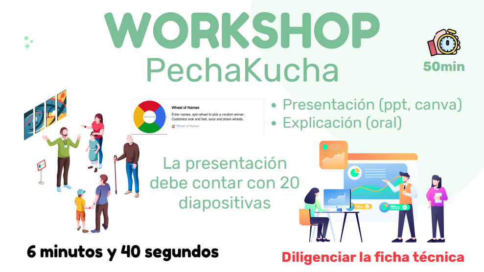
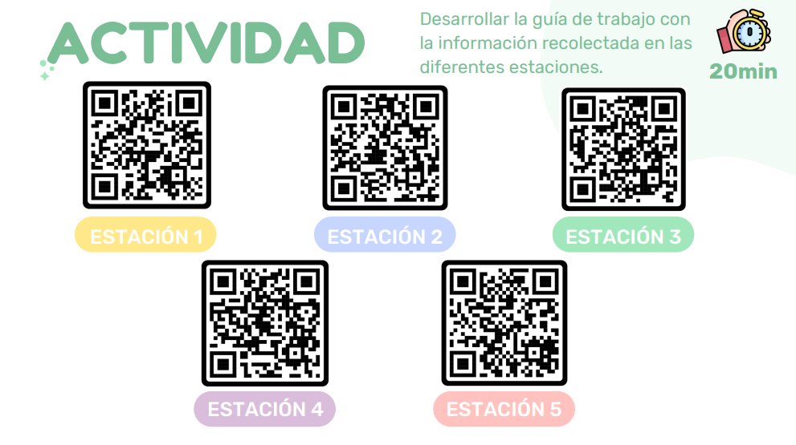

Aplicación
Representa los datos para el usuario y controla la codificación y el control de diálogo.
HTTP, DNS, DHCP, FTP| Modelo OSI | Modelo TCP/IP | PDU (Unidad de Datos) |
|---|---|---|
| 7. Aplicación | 4. Aplicación | Datos |
| 6. Presentación | ||
| 5. Sesión | ||
| 4. Transporte | 3. Transporte | Segmento o Datagrama |
| 3. Red | 2. Internet | Paquete |
| 2. Enlace de Datos | 1. Acceso a la Red | Trama (Frame) |
| 1. Física | Bits |
Representa los datos para el usuario y controla la codificación y el control de diálogo.
HTTP, DNS, DHCP, FTPAdmite la comunicación entre distintos dispositivos a través de diversas redes.
TCP, UDPDetermina la mejor ruta a través de la red para enviar los paquetes.
IPv4, IPv6, ICMPControla los dispositivos de hardware y los medios que forman la red.
Ethernet, WLAN (Wi-Fi), ARPLa aplicación genera los datos a enviar.
Los datos bajan por las capas agregando encabezados (Segmento, Paquete, Trama).
La trama se convierte en bits para viajar por los medios físicos.
El destino recibe, lee y elimina los encabezados al subir por las capas.
Los medios de transmisión son las vías por las cuales se comunican los datos. Se dividen principalmente en dos categorías según la forma en que confinan la señal: los guiados (cables físicos que dirigen la señal) y los no guiados (ondas electromagnéticas que viajan por el aire o el vacío).
Económico, usado en redes LAN. Vulnerable a interferencias si no está blindado.
Mayor ancho de banda que el par trenzado. Usado comúnmente en televisión y proveedores de internet.
Transmite datos mediante pulsos de luz. Inmune a interferencias electromagnéticas, alcanza distancias muy largas.
Viajan largas distancias y penetran paredes. Son la base de las redes inalámbricas locales y personales.
Requieren línea de visión directa entre antenas. Usadas en comunicaciones satelitales y enlaces punto a punto.
Corta distancia y no atraviesan obstáculos sólidos. Usado en controles remotos y comunicación entre dispositivos cercanos.
Realizar una exposición PechaKucha. Modelo OSI capa enlace de datos.

VER PRESENTACIÓNRecorrido por el bloque de la universidad en busca de estaciones con ayuda de pistas.

DESCARGAR PDF